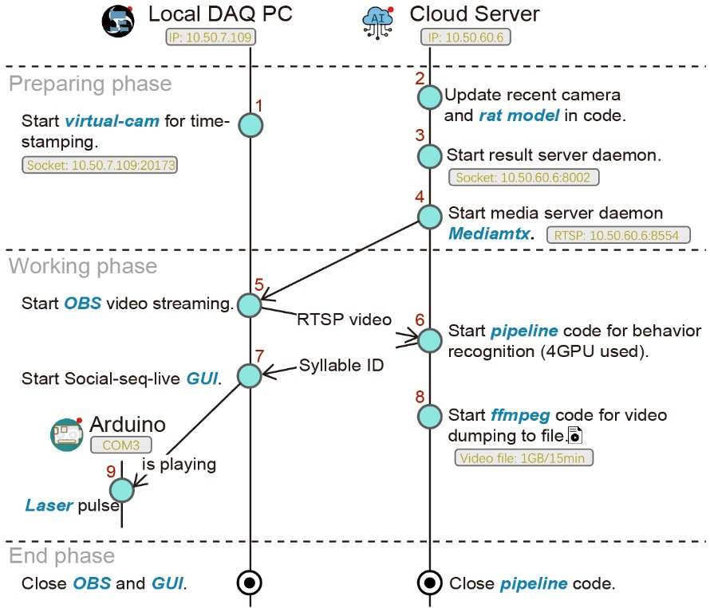
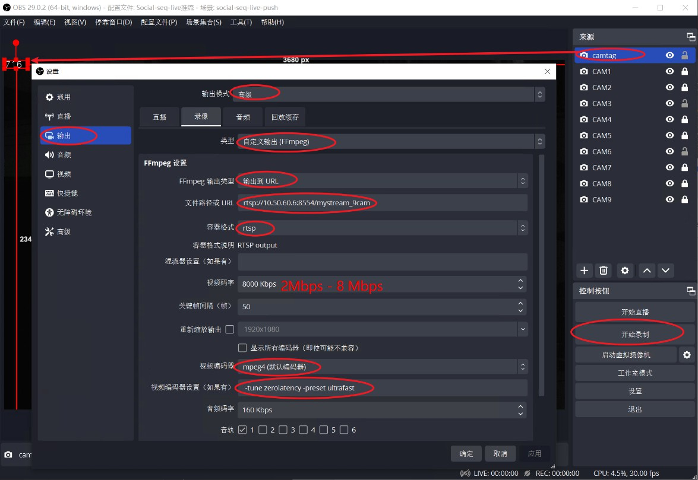

代码流程
开发者: Chenxinfeng, update 2025-08-16
闭环行为控制的代码流程梗概如下:

以下是对应的代码操作：
1. 启动虚拟摄像头进行时间戳标记
在DAQ的PC上进行操作，DAQ安装的是Windows系统。OBS Studio 29.1 版本。OBS 需要添加一个虚拟摄像头("OBS Virtual Camera")，python代码会往这个摄像头帧输出时间码（例如，163）。时间码的数值由PC的时钟决定，每33ms更新一次（30fps 匹配视频帧率），当前时钟的数值也会存储到 10.50.7.109:20173 的服务器上，供其他设备访问，以获取当前时间码。
在github上下载，virtual_LED.py🔗.
在终端执行该脚本，启动虚拟摄像头，并开启socket服务。
python3 virtual_LED.py
提示
建议将其存为windows 的 bat 文件，双击直接运行。该脚本还兼具虚拟LED颜色点亮的功能，可用于视频事件打标，例如用于光遗传Laser的触发事件打标。详细可参考 【#7】 GUI 的代码。
注意
需要自行安装依赖库。让DAQ PC的防火墙开放 20173。
2. 更新代码中的相机和大鼠模型
需要用户提供最新的多相机模型文件和大鼠社交关键点模型文件，并更新到代码中。前者用于3D重构；后者用于计算相同年龄大鼠的体长，便于行为特征归一化。通常，大鼠社交关键点模型文件包含了多相机模型，所以让多相机模型等于大鼠社交关键点模型即可。
修改下面文件的lilab/label_live/usv_yolo_seg_dannce_unit_test.py中的 CALIBPKL 为多相机模型路径， model_smooth_matcalibpkl 为大鼠社交关键点模型路径。
# PATH_TO_LILAB/lilab/label_live/usv_yolo_seg_dannce_unit_test.py
CALIBPKL = '/mnt/liying.cibr.ac.cn_Data_Temp_ZZC2/2506batch-chr2/test/ball/2025-06-13_10-16-58_ball.calibpkl'
model_smooth_matcalibpkl = '/DATA/zhongzhenchao/2501chr2-shank3/all400p/2025-01-05_15-04-37_l7_sm1_pm6.smoothed_foot.matcalibpkl'
model_smooth_matcalibpkl = CALIBPKL = '/a/b/c.matcalibpkl'
3. 启动结果服务器守护进程
source activate mmdet # activate the conda environment
python -m lilab.label_live.socketServer
注意
注意Cloud Server防火墙，开放8002端口。如果出现端口被占用的情况，往往是因为上一个Python程序未正常关闭。请先关闭占用该端口的程序，或执行 lsof -i:8002 查看占用该端口的进程，然后kill掉该进程（kill -9 进程号）。稍等10秒，重启该程序。多次尝试。
4. 启动媒体服务器守护进程 Mediamtx
在Cloud Server上启动Mediamtx，用于接收OBS的推流，并转发给客户端。
docker run --rm -it -p 8554:8554 bluenviron/mediamtx
注意
注意Cloud Server防火墙，开放8554端口。
5. 启动 OBS 视频流
在DAQ PC上启动OBS，并推流到Cloud Server的Mediamtx。
我已经配置好OBS，可以通过下面的简便操作启动推流配置：
- 选择，菜单>配置文件> Social-seq-live推流
- 选择，菜单>场景集合> Social-seq-live-push
然后，点击 "开始录制"按钮（注意不是“开始直播”），进行推流。20秒内不弹出错误提示，表示推流成功。
对于新的DAQ PC，需要重新配置OBS，具体步骤如下：

提示
分辨率和编码方式是影响推流延迟的重要参数，尤其是项目的3840x2400是高分辨率。这套RTSP参数设置，是经过多种测试，延迟低，画质好的参数。其它视频推流的项目，可以参考这个参数设置。
注意
注意OBS的推流地址，需要填写Cloud Server的IP地址，应该是 rtsp://10.50.60.6:8554/mystream_9cam。可以通过 VLC 或 ffplay 等工具，测试是否能够正常播放该流。电脑的性能决定了推流的流畅度，如果电脑性能较差，可能推流不流畅，或者出现卡顿现象。另外，码率（bitrate）需要设低 8Mbps，否则推流延迟高。
6. 启动行为识别流水线代码
在Cloud Server上启动行为识别程序，用于接收OBS的推流，并识别行为，将识别结果标签（Syllable ID）存放到 Result server daemon 中。
source activate mmdet # activate the conda environment
PATH=/usr/bin:$PATH python -m lilab.label_live.usv_yolo_seg_dannce_unit_test
注意
注意查看是否有报错信息。确保OBS已经正常推流，并且推流地址正确。
注意
检查终端输运行帧率（30fps）和延迟(<10帧)。显示iteration 应该约为 30its/s，并且延迟帧数应该在6-10以内。太高的延迟帧（>30帧），导致闭环刺激精度的严重下降。经验原因是 1.DAQ PC性能太差，需要重启OBS软件（通常）；或者2 是有人在使用Cloud Server，抢占了CPU和GPU资源，则清空这些用户的资源（提前组内沟通）。
7. 启动 Social-seq-live GUI
去github 上下载 Social-seq-live 的代码，并安装依赖包。
python main.py # GUI程序，“闭环控制”实验组
python main_exclude.py # GUI程序，“开环控制”对照组
注意
注意“闭环控制”实验组和“开环控制”对照组的GUI程序不同。操作步骤相同。闭环控制，在识别到行为后，自动启动刺激。开环控制，需要排除目标行为，随机给刺激。
接着选择对应的GUI程序，并启动。连接 Cloud Server 和 Arduino后，即自动开始行为识别并光遗传控制。
- 在GUI中，勾选合适的目标行为，例如 "pouncing", "pinning", "chasing" 等。
- 填入Cloud Server 的IP地址，点击“Connect”按钮，连接到Result server daemon。
- 选择 Arduino 串口，并点击“Connect”按钮，连接到Arduino。（Arduino 需要初始化烧录代码，参考【#9】）
8. 启动 ffmpeg 代码以将视频转储到文件
在动物实验开始后，需要记录视频。由于原先的OBS 录像功能已经被占用，因此只能在Cloud Server 上记录视频。
将下面的代码保存为Cloud Server 的 RT_record.sh 文件。每次动物实验开始后，并运行它。它会在 /DATA/chenxinfeng 目录下，保存一个视频文件。文件名是当前时间，例如 2025-01-01_12-00-00.mp4。
#!/bin/bash
# 保存为 RT_record 文件
filename=`date --date='2.2 seconds' +"%Y-%m-%d_%H-%M-%S"`
/home/liying_lab/chenxinfeng/.conda/envs/mmdet/bin/ffmpeg.bak -rtsp_transport tcp -t 00:15:06 -i rtsp://10.50.60.6:8554/mystream_9cam -ss 00:00:02.2 -c:v hevc_nvenc -b:v 10M -maxrate:v 20M -preset:v p4 /DATA/chenxinfeng/${filename}.mp4
9. Arduino 激光脉冲
去github 上下载 Arduino Laser pulse 的代码，并进行烧录。
const int PinNum = 6; // the number of the LED pin
const float duration = 0.5; // time for running, unit = sec.
const float Hz = 40; // frequency, unit = Hz.
const float Duty = 0.2; // duty, unit = 0~1.
关闭 OBS 和 GUI
在实验结束后，复原 OBS 的配置，关闭OBS软件；关闭Social seq live GUI。在Cloude Server上，关闭 pipeline。